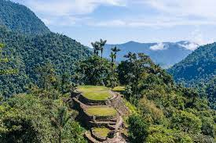
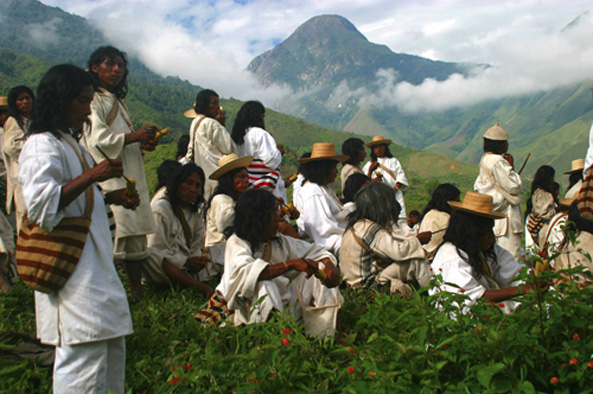

ECOTURISMO COSTA CARIBE
El Caribe es una de las regiones más coloridas y alegres del país. Sus playas, sus sabores, sus fiestas,
su música, su gente y sus historias son la cuna del realismo mágico garciamarquiano, y hacen de este
lugar uno de los destinos turísticos más destacados de Colombia.
¿Qué actividades se pueden desarrollar en la Sierra Nevada de Santa Marta?

La Sierra Nevada de Santa Marta, en un sistema montañoso, considerado el más alto del mundo a la
orilla del mar, ya que sus picos nevados más altos (los Picos Cristóbal Colon y Simón Bolívar)
llegan a los 5775 msnm.
La UNESCO la declaró Reserva de la Biosfera y Patrimonio de la Humanidad, en 1979. Esta montaña de
Colombia posee todos los pisos térmicos, desde lo más cálido a nivel del mar hasta lo más frío en
los nevados.
Todas sus cuencas se caracterizan por su inmensa belleza y exuberancia natural, siendo el único
litoral en el mundo donde hay montañas y nevados tan cerca al mar brindando así todos los climas y
una maravillosa riqueza en biodiversidad, ecosistemas, hidrografía, fauna, flora y la más importante
sus comunidades indígenas que protegen y cuidan la madre naturaleza con una autoridad. Aquí es
posible realizar el montañismo, hacer senderos interpretativos y planear recorridos en bicicleta.

El atlántico y sus maravillas
El departamento del Atlántico, es el cuarto departamento de Colombia más poblado. Su temperatura
promedio es de 26°C, perfecto para realizar el ecoturismo que se relaciona a continuacion
-
Piajó
-
Tubará
-
Luruaco
-
Usiacurí
En el municipio de Piojó encontramos la Reserva de Sociedad Civil Los Charcones, denominada así
desde el 2018 por Parques Nacionales Naturales de Colombia. La conforman 43 hectáreas que incluyen
senderos y piscinas naturales de hasta 7 metros de profundidad. Los visitantes de este espacio
natural rico en flora y fauna, pueden practicar senderismo, camping y paisajismo. La reserva natural
Los Charcones ha sido incluida además como destino para avistamiento de aves.
En Tubará es infaltable visitar el Corral de San Luis, una piscina natural de agua cristalina,bañada
por una hermosa cascada y rodeada de vegetación virgen con diversidad de fauna y flora. Situado a 4
kilómetros del casco urbano, es considerado uno de los rincones más hermosos del Atlántico.
En Luruaco encontramos una laguna de 430 hectáreas, ideal para paseos en bote, pesca y práctica de
esquí. Su ecosistema es hábitat del mono tití cabeciblanco, especie en vía de extinción. Permite
realizar senderismo, caminatas ecológicas y avistamiento de aves.
En Usiacurí es posible disfrutar del Distrito de Manejo Integrado de Luriza. Con una extensión de
837 hectáreas y una vegetación de bosque seco tropical, posee manantiales y arroyuelos de
incalculable valor ecológico, con 20 componentes minerales a los que los pobladores atribuyen
propiedades medicinales.
Cuenta con al menos 122 especies de flora y 244 especies de fauna, entre anfibios, reptiles, aves
mamíferas y unas muy singulares como el mono cotudo, la guacharaca, tucanes, loros y el perezoso. En
las ramas más altas de los árboles es posible observar ardillas y manadas de monos cotudos.
Estos y otros lugares del departamento están siendo promovidos en un clúster (agrupación de empresas u
organizaciones) de turismo sostenible y experiencial que ha incluido la participación de la Gobernación
del Atlántico, Universidad del Costa y otros actores del sector, a fin de consolidar y potencializar una
oferta sólida para el disfrute de propios y visitantes.
Cartagena y sus lindos atardeceres
En Cartagena de Indias encuentras lugares ideales para descansar que te conectan con la naturaleza,
entre esas experiencias, está maravillarse con las tonalidades verde azules de un mar cristalino y
limpio; jugar en la arena más blanca, fina y fresca que puedas imaginar; escuchar el canto de alrededor
de 2.000 especies de aves; practicar deportes acuáticos; deleitarse con los románticos recorridos en
canoa y disfrutar de la ternura de un show de delfines. Todo esto es posible si llegas a visitar a La
Heroica, ciudad que también encanta por su turismo ecológico y a continuación conocerás los mejores
sitios para apreciar:
-
Playas
-
Parque Corales del Rosario y de San Bernardo
En Cartagena encuentras varias de las mejores playas de la Costa Caribe y entre esas están las de
Castillogrande, perfecta para realizar caminatas y tomar el sol acompañado de un cóctel de camarón;
El Laguito y Bocagrande, deleitarse con ensaladas de frutas y un ‘coco loco’ al son de un conjunto
vallenato sin duda un buen plan; Blas el Teso y La Boquilla, opción para disfrutar de un día lleno
de folclor, un buen atardecer y un delicioso almuerzo típico al norte de la ciudad y si lo que
quieres es pasar un día tranquilo con las olas del mar, las de Playa de Oro y Punta Hicaco, te
ofrecen esta posibilidad en Manzanillo del Mar.
En Corales del Rosario, a poca profundidad y gracias a sus aguas totalmente cristalinas observar arrecifes de coral, espectáculo que supera la imaginación, para apreciar esta maravilla el esnórquel es el plan favorito por los visitantes. Esta área protegida incluye cuatro islas conocidas como zonas intangibles; dos de ellas ubicadas en el Archipiélago de Nuestra Señora del Rosario y las
otras en el Archipiélago de San Bernardo, también puedes apreciar tranquilas y hermosas ciénagas con
bosques de manglar en la del Mohán, Pelao y la ciénaga de Cholón ubicadas en la Isla Barú.